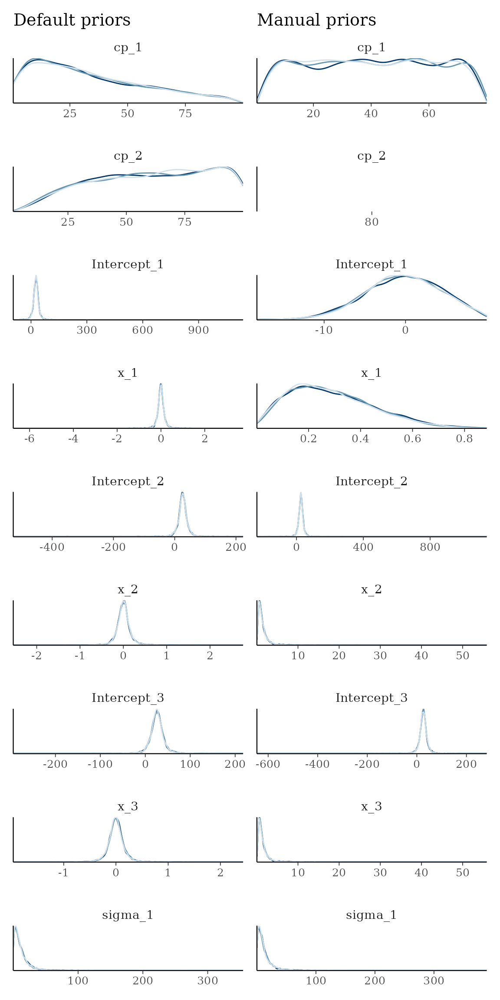
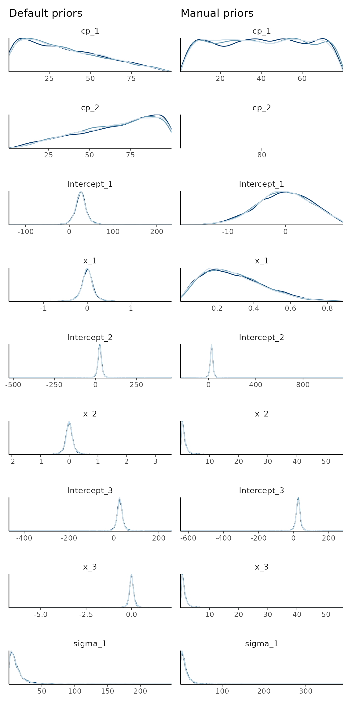

NOTE: the JAGS-specific prior interface below is likely to be deprecated in the future, when additional backends are added beyond JAGS.
Setting a prior
mcp takes priors in the form of a named list. The names
are the parameter names, and the values are JAGS code. Here is a fairly
complicated example, to demonstrate the various ways priors can be
used:
model = list(
y ~ 1 + x, # Intercept_1 + x_1
~ 1 + x, # cp_1, Intercept_2, and x_2
~ 1 + x # cp_2
)
prior = list(
Intercept_1 = "dnorm(0, 5) T(, 10)", # Intercept; less than 10
x_1 = "dbeta(2, 5)", # slope: beta with right skew
cp_1 = "dunif(min(x), cp_2)", # change point between smallest x and cp_2
x_2 = "dt(0, 1, 3) T(x_1, )", # slope 2 > slope 1 and t-distributed
cp_2 = 80, # A constant (set; not estimated)
x_3 = "x_2" # continue same slope
# Intercept_2 and Intercept_3 not specified. Use default.
)The values use mcp’s JAGS-string syntax, so JAGS distributions are
generally allowed. See the JAGS
user manual for more details. Prior strings use R-like conventional
distribution scales even though JAGS has a different parameterization
underneath: SD for dnorm(), scale for dt(),
ddexp(), and dlogis(), and log-SD for
dlnorm(). When generating JAGS code, mcp
converts these to inverse variance for dnorm(),
dt(), and dlnorm(), and inverse scale for
ddexp() and dlogis(). You can inspect the
translation by comparing fit$prior with
fit$jags_code.
Other notes:
Default population-level change-point priors are ordered. For user priors,
mcpadds truncation (e.g.,T(cp_1, )) only when the prior has neither explicit truncation nor an inherently bounded form such asdunif()ordirichlet(). User-specified population-level bounds are respected as written. When change points have group-level deviations, their realized locations are constrained to remain ordered within every group.mcpallows inserting data-dependent values: for example,min(x),max(x),median(y),mad(y),max(x) - min(x),n_segments(), andn_cp().mcpresolves these expressions before generating JAGS code. The oldermcpv0.3.4 uppercase constants (MINX,MAXX, and so on) remain temporarily supported with a deprecation warning.You can fix any parameter to a specific value. Simply set it to a numerical value (as
cp_2above). A constant is a 100% prior belief in that value, and it will therefore not be estimated.You can also equate one variable with another (
x_3 = "x_2"above). You would usually do this to share parameters across segments, but you can be creative and do something likex_3 = "x_2 + 5 - cp_1/10"if you want. In any case, it will lead to one less parameter being estimated, i.e., one less free parameter.
Let us see the priors after running them through mcp and
compare to the default priors:
library(mcp)
df_dummy = data.frame(x = 1:100, y = 1:100)
empty_manual = mcp(model, data = df_dummy, prior = prior, sample = FALSE)
empty_default = mcp(model, data = df_dummy, sample = FALSE)
# Inspect resolved priors and bounds
prior_summary(empty_manual) # For more details: add verbose = TRUE## # A tibble: 9 × 5
## parameter segment dpar prior bounds
## <chr> <int> <chr> <chr> <chr>
## 1 cp_1 2 cp uniform(min = 1, max = cp_2) [min(…
## 2 cp_2 3 cp 80 none
## 3 Intercept_1 1 mu normal(mean = 0, sd = 5) [-Inf…
## 4 x_1 1 mu beta(shape1 = 2, shape2 = 5) [0, 1]
## 5 Intercept_2 2 mu student_t(df = 3, location = 50.5, scale = 3… none
## 6 x_2 2 mu student_t(df = 3, location = 0, scale = 1) [x_1,…
## 7 Intercept_3 3 mu student_t(df = 3, location = 50.5, scale = 3… none
## 8 x_3 3 mu x_2 none
## 9 sigma_1 1 sigma student_t(df = 3, location = 0, scale = 37.1) [0, I…
prior_summary(empty_default)## # A tibble: 9 × 5
## parameter segment dpar prior bounds
## <chr> <int> <chr> <chr> <chr>
## 1 cp_1 2 cp student_t(df = 1, location = 1, scale = 49.5) [min(…
## 2 cp_2 3 cp student_t(df = 1, location = 1, scale = 49.5) [cp_1…
## 3 Intercept_1 1 mu student_t(df = 3, location = 50.5, scale = 3… none
## 4 x_1 1 mu student_t(df = 3, location = 0, scale = 0.37… none
## 5 Intercept_2 2 mu student_t(df = 3, location = 50.5, scale = 3… none
## 6 x_2 2 mu student_t(df = 3, location = 0, scale = 0.37… none
## 7 Intercept_3 3 mu student_t(df = 3, location = 50.5, scale = 3… none
## 8 x_3 3 mu student_t(df = 3, location = 0, scale = 0.37… none
## 9 sigma_1 1 sigma student_t(df = 3, location = 0, scale = 37.1) [0, I…Now, let’s simulate some data from model. The following
priors are “at odds” with the actual data so as to show their
effect.
df = data.frame(x = runif(200, 0, 100), y = 1) # 200 datapoints between 0 and 100
set.seed(42)
df$y = empty_default$simulate(empty_default, df,
Intercept_1 = 20, Intercept_2 = 22, Intercept_3 = 30, # intercepts
x_1 = -0.5, x_2 = 0.5, x_3 = 0, # slopes
cp_1 = 35, cp_2 = 70, # change points
sigma = 5)
head(df)## x y
## 1 8.0750138 22.81729
## 2 83.4333037 27.17651
## 3 60.0760886 36.35369
## 4 15.7208442 15.30389
## 5 0.7399441 21.65137
## 6 46.6393497 27.28905Sample the prior and posterior. We give the manual fit a longer warmup since it is harder to find the right posterior under these weird prior constraints (priors will usually improve sampling efficiency).
future::plan(future::multisession, workers = 3)
fit_manual = mcp(model, data = df, sample = "both", warmup = 10000, prior = prior, seed = 42)
fit_default = mcp(model, data = df, sample = "both", warmup = 10000, seed = 42)First, let’s look at the priors side by side. Notice the use of
prior = TRUE to show prior samples. This works in
plot(), plot_pars(), and
summary() among others.
library(ggplot2)
set.seed(42)
pp_default = plot_pars(fit_default, type = "dens_overlay", prior = TRUE, nvariables = NULL) +
ggtitle("Default priors")
set.seed(42)
pp_manual = plot_pars(fit_manual, type = "dens_overlay", prior = TRUE, nvariables = NULL) +
ggtitle("Manual priors")
pp_default + pp_manual
Here are the resulting posterior fits:
set.seed(42)
plot_default = plot(fit_default) + ggtitle("Default priors")
set.seed(42)
plot_manual = plot(fit_manual) + ggtitle("Manual priors")
plot_default + plot_manual
We see the effects of the priors:
- The intercept
Intercept_1was truncated to be below 10. - The slope
x_1is bound to be non-negative (becausedbeta). - The slopes
x_2andx_3were forced to be identical. - The change point
cp_2was a constant, so there is no uncertainty there.
This is a contrived example. Usually setting priors manually aims to sample the “correct” posterior.
Default priors on change points
Change point locations must lie within the observed range
[min(x), max(x)] and maintain strict order
cp_1 < cp_2 < ... < cp_n. Without this rule,
change point locations would be unidentifiable. If you inspect
fit$jags_code, you will see that mcp inserts
boundary markers at cp_0 = min(x) and
cp_{n+1} = max(x) to ensure the ordering constraint.
For any given range, introducing more change points makes the prior
for each change point more informative (as shown in the figure below).
mcp provides two built-in population-level prior
families:
-
One change point: Both specifications default to
cp_1 = uniform(min(x), max(x)). Its location is uniform over the observed x-range. -
The t-tail prior (default for 2+ change points):
Sequentially truncated Student-t distributions centered at
min(x). Specifically,cp_i = student_t(df = n_cp() - 1, location = min(x), scale = (max(x) - min(x)) / n_cp()) T(cp_{i-1}, max(x)). -
The Dirichlet prior: A joint prior on segment
spacings specified via
prior = list(cp_1 = "dirichlet(1)", cp_2 = "dirichlet(1)", ...).
## Posterior was not drawn. Using prior draws. Set `prior = TRUE` to mute this message.
## Posterior was not drawn. Using prior draws. Set `prior = TRUE` to mute this message.The t-tail prior on 2+ change points (default)
For 2+ change points, the default rule (on all change points) is
cp_i = student_t(df = n_cp() - 1, location = min(x), scale = (max(x) - min(x)) / n_cp()),
bounded below by the preceding change point and above by
max(x).
-
Degrees of freedom: It is t-distributed with N - 1 degrees of freedom
(
n_cp() - 1). Together with the decreasing scale, this makes the underlying distributions more concentrated as the number of change points increases. -
Scale: The scale is
(max(x) - min(x)) / n_cp(). This is a calibration choice, not the equal-segment spacing (which would divide byn_cp() + 1). -
Location and truncation: The location parameter is
always the lowest observed
x. Thuscp_1is a bounded half-t andcp_2+use sequentially truncated right tails of the same t (hence “t-tail prior”). Their means are shifted by truncation and are not equal tomin(x). -
Properties: The sequential truncation does not
produce exact uniform order statistics; the middle segments tend to get
narrower than the first/last segments. For non-small datasets, the
effect on the posterior is negligible, though
point-
hypothesis()tests via Savage-Dickey density ratios would be strongly impacted. Its main advantage is sampling speed: JAGS samples this formulation much faster than the Dirichlet prior.
Dirichlet-based prior on change points
The Dirichlet
distribution places a joint prior on positive segment spacings that
sum to the observed x-range. Consequently, the derived population-level
change points are naturally ordered and bounded. This construction also
underlies monotonic effects in brms (Bürkner & Charpentier
(2019)).
The Dirichlet distribution is a simplex of beta distributions (they
always sum to 1), where the individual betas represent inter-changepoint
distances. For N change points, the
distribution for change point i is
\text{Beta}(i, N + 1 - i), so
cp_1 ~ Beta(1, N) and cp_N ~ Beta(N, 1).
Scaling from [0, 1] to the observed
data range (0 --> min(x), 1 --> max(x))
gives the desired bounding.
To use the Dirichlet prior, specify it for all change points:
prior_dirichlet = list(
cp_1 = "dirichlet(1)",
cp_2 = "dirichlet(1)",
cp_3 = "dirichlet(1)"
)The number in parentheses is a common \alpha concentration parameter (all change
points must share the same \alpha).
Values below 1 favor uneven spacings, dirichlet(1) treats
spacings exchangeably (giving the ordered-uniform distribution), and
values above 1 favor more evenly spaced change points.
Manual priors on change points
You can customize change point priors as shown in the initial
example. Beware that the nature of the priors changes when truncation is
applied; use plot_pars(fit, prior = TRUE) to inspect the
realized prior distributions.
For an otherwise unbounded user prior such as
cp_2 = "dnorm(40, 10)", mcp automatically adds
default bounds equivalent to
cp_2 = "dnorm(40, 10) T(cp_1, max(x))". An explicit
truncation, including T(,), or a dunif() prior
is used as written. Relaxing the order can cause label-switching between
segments and make sampling difficult, so inspect the resulting prior
carefully.
Default priors on linear predictors
The defaults borrow the robust calibration used by brms,
adapted to the local parameterization of mcp. You can
inspect all resolved priors for a model using
prior_summary(fit, verbose = TRUE).
-
Intercepts: Unlike the improper flat default
coefficient priors in
brms,mcpuses proper Student-t priors because JAGS does not support flat priors. With the identity link, the Gaussian intercept prior is centered onround(median(y), 1)with scalemax(2.5, round(mad(y), 1)). With the log link, location and scale are derived from \log(y) (with zeros replaced by 0.1). -
Slopes: Numeric coefficient priors use the
corresponding family-level scale divided by a representative change in
the predictor: its observed range
max(x) - min(x)forpar_xand binary variables, and two standard deviations (2\,\text{SD}) otherwise. This follows the scaling convention proposed by Gelman (2008) and ensures that slope priors remain identical and comparable across models regardless of the number of change points. -
Unspecified SD model (
sigma): For Gaussian models without an explicitsigma()formula,sigma_1defaults todt(0, max(2.5, round(mad(y), 1)), 3) T(0, ), matchingbrms. This remains true forgaussian(link = "log"): that link constrains the conditional mean, not the observations, so non-positive responses are valid and are not passed throughlog()merely to construct a sigma prior. -
Modeled SD (
sigma(1 + x)): An explicitsigma()formula models log-SD, as inbrms. Its intercept prior isdt(0, 2.5, 3), and its contrast and numeric-coefficient priors use the same reference-change scaling described above.
Default priors on group-level effects
Each group-level effect has a population-level SD parameter.
Predictor-side deviations use a zero-mean normal distribution governed
by that SD, as in ordinary multilevel regression. With a
multi-coefficient || term, every independent coefficient
has its own SD. The SD receives a positive, weakly informative prior
from the family and link specification. For distributional parameters,
the deviations and their SD are on that parameter’s link scale; for
example, effects inside an explicit sigma() formula are on
the log-SD scale.
Group-level change-point deviations are exactly zero-centered so that each population-level change point is the arithmetic mean of its group-specific locations. Their default priors use sequential bounds, and the model constrains the resulting locations to remain ordered within each group. All group-level change points in one model must use the same grouping factor. Predictor-side deviations are hierarchically mean-zero but are neither exactly centered nor ordered. See group-level effects with mcp.
Prior predictive checks
Prior predictive checks are a great way to ensure that the priors are
meaningful. Simply set sample = "prior". Let us do it for
the two sets of priors defined previously in this article, to see their
different prior predictive space.
# Sample priors
fit_pp_manual = mcp(model, data = df, prior = prior, sample = "prior", seed = 42)
fit_pp_default = mcp(model, data = df, sample = "prior", seed = 42)
# Plot it
set.seed(42)
plot_pp_manual = plot(fit_pp_manual, lines = 100) + ylim(c(-400, 400)) + ggtitle("Manual prior")
set.seed(42)
plot_pp_default = plot(fit_pp_default, lines = 100) + ylim(c(-400, 400)) + ggtitle("Default prior")
plot_pp_manual + plot_pp_default # using patchwork
You can see how the manual priors are more dense to the left, and the “concerted” change at x = 80.
JAGS code
Here is the JAGS code for fit_manual:
fit_manual$jags_code## model {
## # mcp helper values
## cp_0 = CONST1_
## cp_3 = CONST2_
##
## # Priors for population-level effects
## cp_1 ~ dunif(CONST1_, cp_2) # User-specified prior
## cp_2 = CONST3_ # Fixed at 80
## Intercept_1 ~ dnorm(0, 1/(5)^2) T(,10) # User-specified prior
## x_1 ~ dbeta(2, 5) # User-specified prior
## Intercept_2 ~ dt(26, 1/(10.3)^2, 3) # Robustly centered mean intercept with a minimum scale of 2.5
## x_2 ~ dt(0, 1/(1)^2, 3) T(x_1,) # User-specified prior
## Intercept_3 ~ dt(26, 1/(10.3)^2, 3) # Robustly centered mean intercept with a minimum scale of 2.5
## x_3 = x_2 # Same value as x_2
## sigma_1 ~ dt(0, 1/(10.3)^2, 3) T(0,) # Positive residual SD calibrated on the response scale
##
## # Model and likelihood
## for (i_ in 1:length(x)) {
## # par_x local to each segment
## x_local_1_[i_] = min(x[i_], cp_1)
## x_local_2_[i_] = min(x[i_], cp_2) - cp_1
## x_local_3_[i_] = min(x[i_], cp_3) - cp_2
##
## # Formula for mu
## link_mu_[i_] =
## (x[i_] >= cp_0) * (x[i_] < cp_1) * inprod(rhs_matrix_[i_, c(1)], c(Intercept_1)) * 1 +
## (x[i_] >= cp_0) * (x[i_] < cp_1) * inprod(rhs_matrix_[i_, c(2)], c(x_1)) * x_local_1_[i_] +
## (x[i_] >= cp_1) * (x[i_] < cp_2) * inprod(rhs_matrix_[i_, c(3)], c(Intercept_2)) * 1 +
## (x[i_] >= cp_1) * (x[i_] < cp_2) * inprod(rhs_matrix_[i_, c(4)], c(x_2)) * x_local_2_[i_] +
## (x[i_] >= cp_2) * inprod(rhs_matrix_[i_, c(5)], c(Intercept_3)) * 1 +
## (x[i_] >= cp_2) * inprod(rhs_matrix_[i_, c(6)], c(x_3)) * x_local_3_[i_]
##
## # Formula for sigma
## link_sigma_[i_] =
## (x[i_] >= cp_0) * inprod(rhs_matrix_[i_, c(7)], c(sigma_1)) * 1
##
## # Likelihood and log-density for family = gaussian()
## mu_[i_] = link_mu_[i_]
## sigma_[i_] = max(1e-03, link_sigma_[i_])
## y[i_] ~ dnorm(mu_[i_], 1 / sigma_[i_]^2)
## }
## }